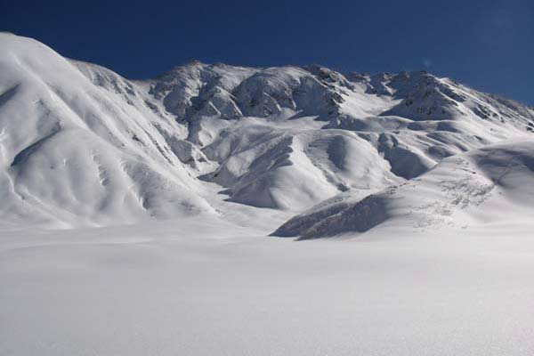
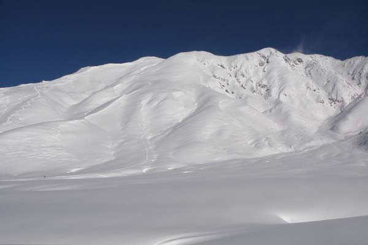
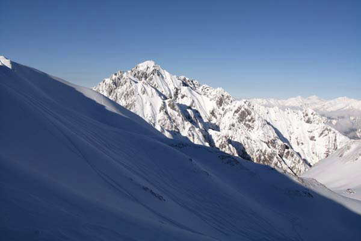
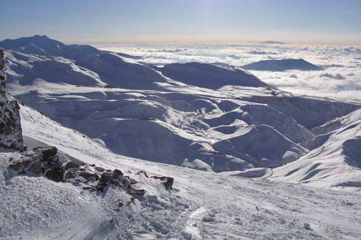
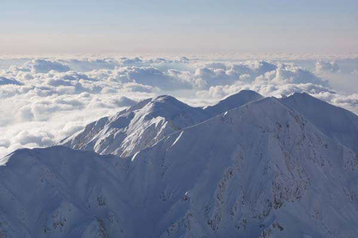
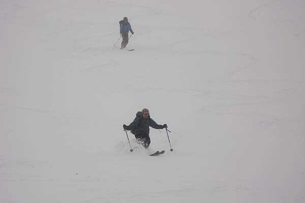
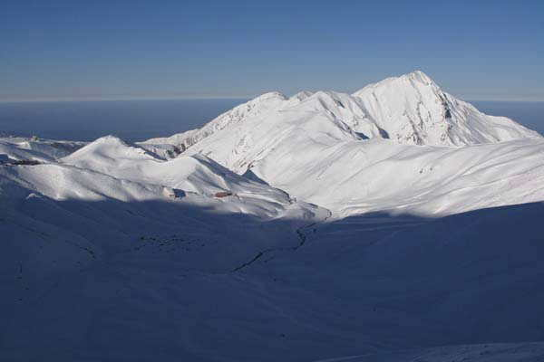
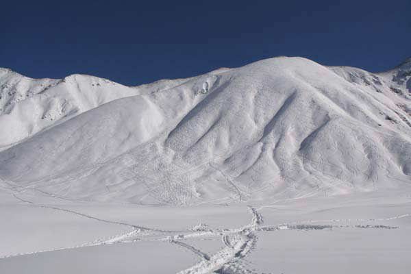
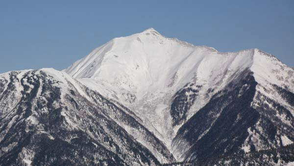
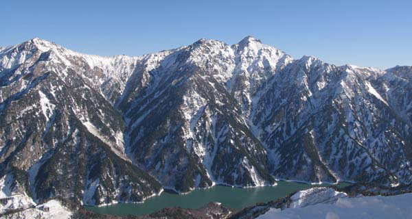

|
|||||||||||||||||||||||||||
|
立山 初滑り |
| 実 施 日 | ２００７年１１月２３日〜２５日 | |||
| 参 加 者 | 高尾文雄、ドクターK、友人S | |||
| 報 告 者 | 高尾文雄 | |||
| 撮 影 者 | ドクターK | |||
| 参加者数 | 会員１名、非会員２名 | |||
| １０年に一度あるかという絶好の天気が連休にやってきて立山でパウダーを満喫してまいりました。 雷鳥平へテントを張りました。 多くのパウダー狂が全国からやってきて室堂周辺はシュプールだらけとなっていました。 スキーはファットがほとんどで、それも尋常なファットではなく、すごく太くて長くて重い。 まるでファットスキーの品評会のようでした。 特に今回は若い女性が多いのが気がついた点です。 |
| ２３日 晴 |
| 雷鳥沢を登って御前の小屋まで登ると、剣が白く輝いていました。 剣沢の上部を試しに一本滑りました。 雷鳥沢はシュプールが多く、隣の沢はトラックがなく気持ちよいパウダーでした。 |
|  | |
| 雷鳥平のテントサイトから望む立山 |
|  | |
| 雷鳥平からの雷鳥沢 |
|  | |
| 御前の小屋からの剣 |
|  | |
| 御前の小屋からの弥陀ヶ原 |
|  | |
| 御前の小屋からの奥大日と大日 |
| ２４日 曇 |
| 真砂岳へ登り、真砂沢の上部を５本滑りました。 ここは全くシュプールが無く我々だけの世界でした。 |
|  | |
| 真砂沢を滑る |
| ２５日 快晴 |
| 真砂岳西面を２本滑りました。 雪はこの日になっても悪くならずパウダーのままでした。 ２本とも気持ちの良いすべりでした。 |
|  | |
| 真砂岳西面からの奥大日 |
|  | |
| 真砂岳西面に無数についたシュプール |
|  | |
| 大観峰から見た鹿島槍南峰(かつて5月に頂上から滑った） |
|  | |
| 左から赤沢、スバリ、針ノ木の各西尾根(大観峰から) |
| 総じてファットスキー、それもほとんどがカービングではなく寸胴型の出現でレベルが上がり、綺麗なターンが描いたシュプールが残っていました。 |